Projects
These are all mini projects that have been created. The goal is to make sure the cost is under £20 and for it to be intresting and to learn something from it.
| 15 inch TV Repair |
(2021) |
| 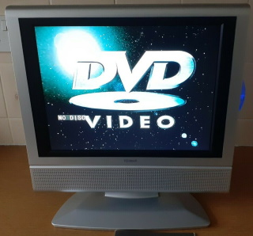 |
Brought as a xmas present but found that everytime you turned it on, the lights on the DVD flickered and the backlight took ages to work if ever. Repaired 2 caps on the powerboard costing £2.67 and that seems to have fixed the issue. |
| PS2 Repair |
(2020) |
| 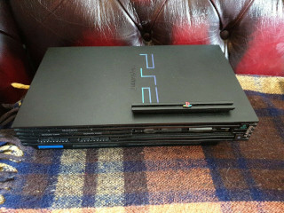 |
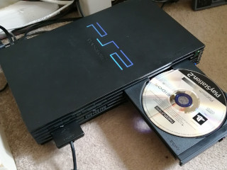 |
| Wanting a PS2 again, I won one for £2.20! however the seller never said that the motherboard was faulty, so there was nothing further I could do. |
So I brought another one for £17 that had a Read-Disc-Error, after fixing it, its now fully working unit again. |
| Food Mixer |
(2020) |
| 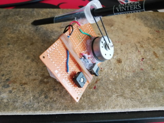 |
 |
| 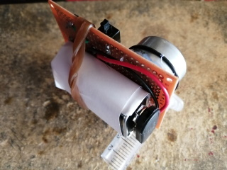 |
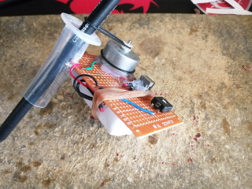 |
| Being stuck at home in lock-down, I was just looking at some parts I had laying around and ended up creating a small battery powered mixer. |
This is very simple and cost nothing to make. I started with a 1.5v battery but had to end up with a 9v battery to get more power. There is a variable resister that can be adjusted too. |
| Repairs |
(2020) |
| 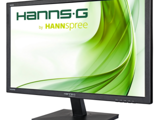 |
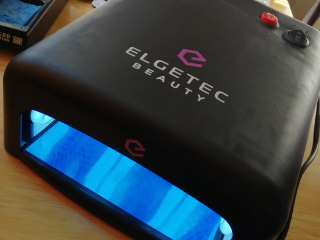 |
| I have slowly been starting to repair more things this year. I started off with repairing components on a power supply (built in) on a 22 inch monitor. This cost me about £2 in parts from a non working display to a fully working one.The screen was free as it was to be scrapped due to not working. |
Internal cable repair on a UV Nail Dryer as it was poorly made. Its now all working again and still going months after the repair. |
| Mini Projects |
(2020) |
| 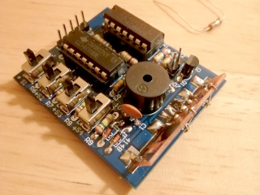 |
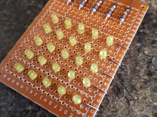 |
| 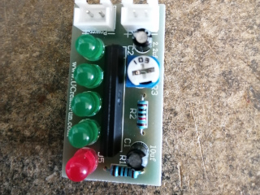 |
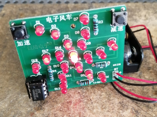 |
| 3 Mini Projects were created from kits ordered from China. These were a challenge as none of them came with any instructions. The rotating windmill light project does not work correctly and this is down to a fault on the chip. |
The sound maker works and is very loud. The 5x5 LED Matrix was created from scratch and was a good learning project. All 4 projects together cost under £10. |
| Ardunio Computer |
(2019) |
 |
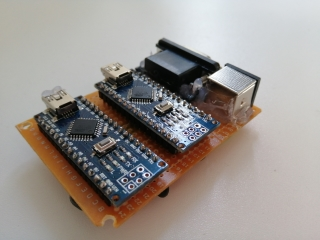 |
| 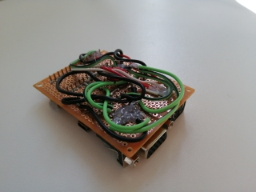 |
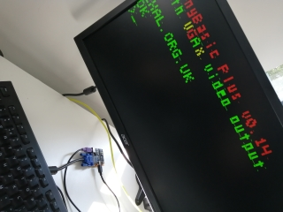 |
A mini personal computer made from 2 ardunios. This was built from a guide on the internet that was just an interesting project to see how it works.
One Ardunio reads the input from the PS2 keyboard and also runs Ardunio Basic, then that sends the output to the second Ardunio that just handles the video output. Power feed goes into the VGA one then shared to the other.
|
The display is not 100% working as it not clean, I tried many things but come to the concusion that its the Ardunio nano itself is not running right. The project cost £6 for the two Ardunio nanos, and the rest was on buying the sockets and board, in total it was under £10 to build.
Although I cant see any use for it, it was more about the fun of building it than the end result. |
| DVD CNC |
(2017) |
| 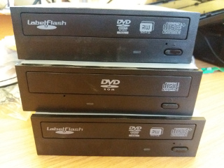 |
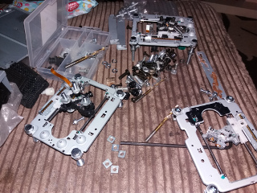 |
| 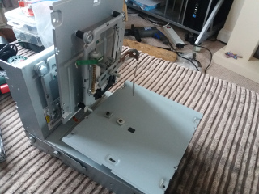 |
|
| Intrested in the tinkernut website on creating a 3D printer, the first part was to create and understand a CNC setup. This could be made out of old computer parts including 3 DVD drives, a PC power supply, some steper motor controllers and an uno board. |
Costing a hugh £15 to build, it was a very interesting project to create it. The main idea behind this was to build the CNC setup, then add a 3D pen to the setup and make it into a 3D printer. |
| PC - Rad One |
(2017) |
| 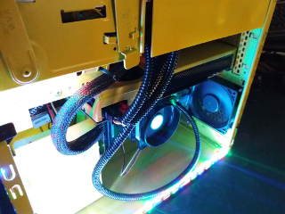 |
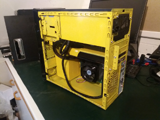 |
| 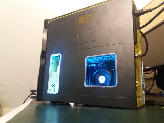 |
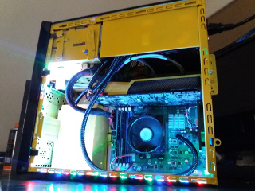 |
Project RAD ONE was first thought of as a radioactive design. So knowing that I wanted a yellow theme and to custom paint plastic, I started with making the PC work with an old GTX graphics card. Once tested, it was time to re-build the graphics card and paint it. I also striped everything out the case and painted that too.
Adding cable management and trying to tidy a case that was not a good design to show off was a challenge. The side panel was going to have clear plastic but I ran out of it and changed my mind when cutting the case. |
Two air holes were created and then tubing put around the edging.
The Power cables were modified and changed to lengthen and remove adapters and the RGB lighting was USB but that was removed and wired into the power supply to keep it tidy and so that everything was lit up when turning on the PC.
Overall I am happy with the paint and plastic but the cabling could of been better. |